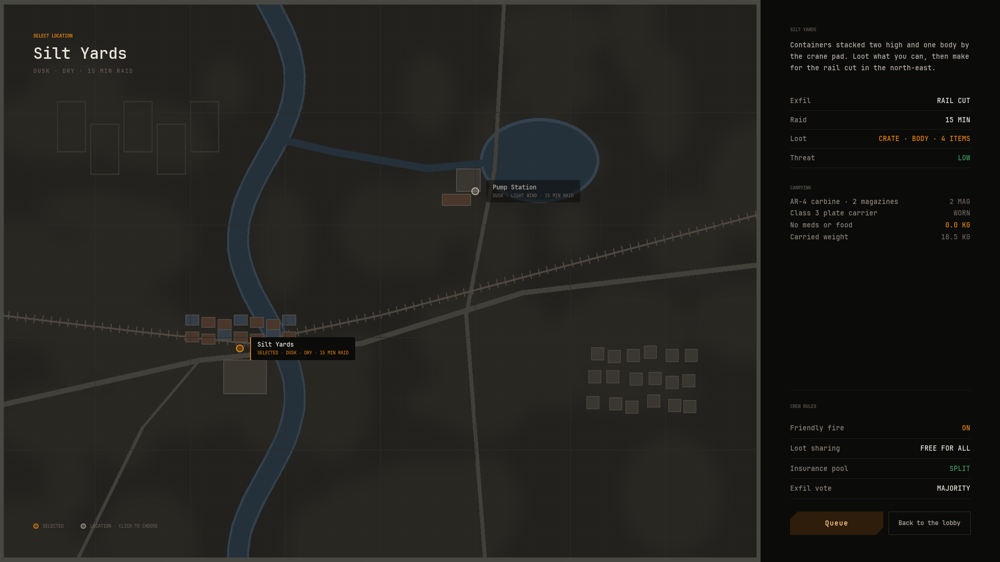
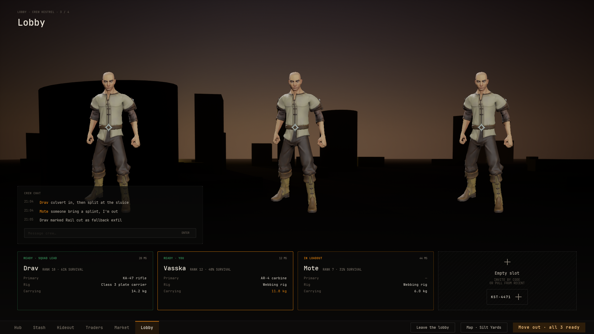
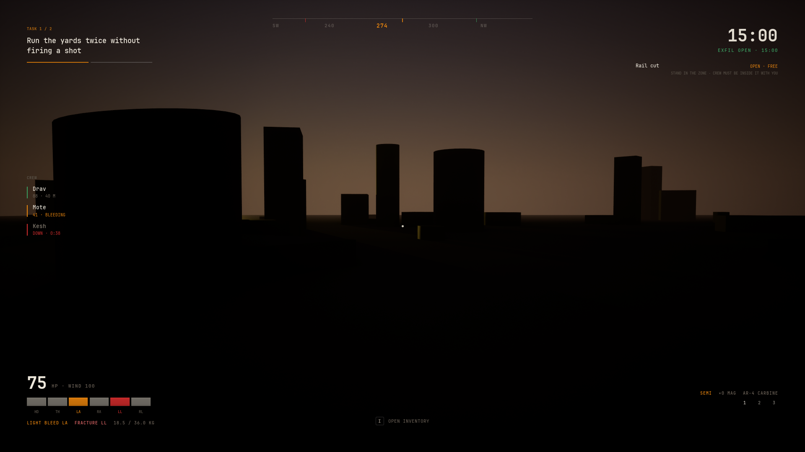
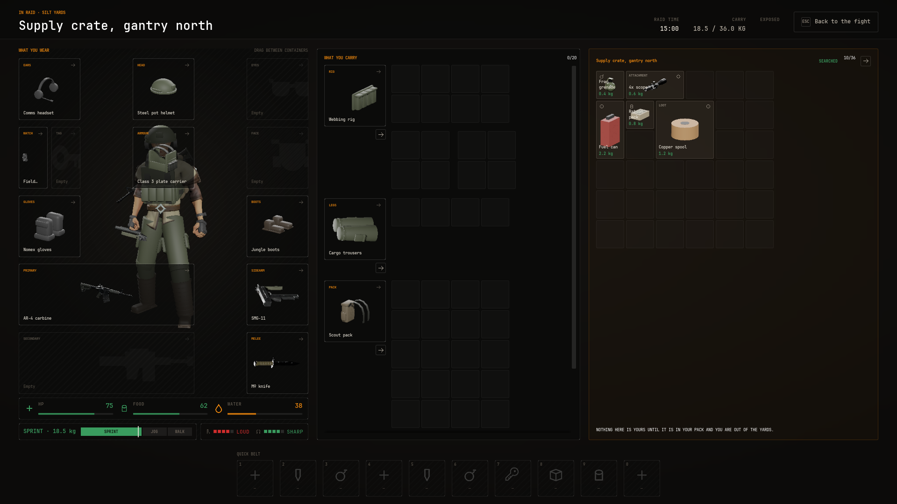
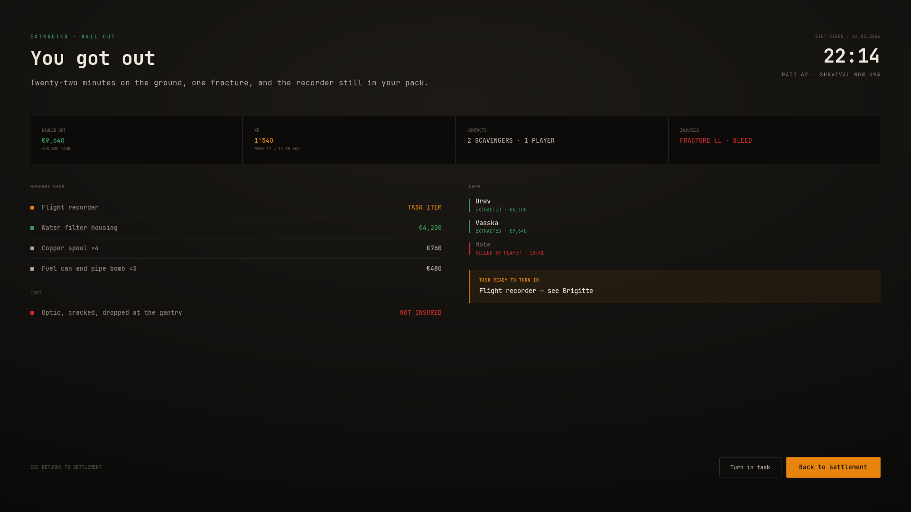

The raid loop
Blackline runs the whole raid loop: the lobby, the location screen, the deploy queue, the raid HUD, looting, the extract bar and the debrief. Your game loads the level and says when the raid ends. This guide wires that up in Blueprint, the way the Blackline Demo does.
The loop at a glance#
- The player opens the lobby (
W_PartyLobby). The map button names the chosen raid map. - The location screen (
W_InsertionSelect) shows one point per raid map. Picking a point calls Set Selected Raid Map. - Move out starts the deploy queue: searching, match found, countdown.
- The queue pushes the raid HUD, calls Begin Raid and raises
Raid.Deploy. Your game loads the map's level. - Interacting with a crate or a body calls Open Loot Screen with that actor.
- Standing in an exit fills the HUD's extract bar. At the end your game calls End Raid with Extracted.
- If the raid clock runs out, the raid ends as missing in action and everything carried is lost except the secure case.
- Your game opens the debrief (
W_RaidSummary), which shows the result, the haul and the time.
Make the raid maps#
Each raid map is a Raid Map Definition data asset. The lobby, the location screen, the raid HUD's exits and the raid clock all read it.
- Display Name, Conditions
- The map's name and a line such as
DUSK · DRY · 15 MIN RAID. - Region Position
- Where its point sits on the location screen, from 0 to 1 across and down, over the Region Image of your View Setup Definition.
- Briefing, Stats
- What the location screen says when the point is picked, and the figures under it. Empty uses the first insertion point's.
- Map Image
- The picture of the map itself, drawn under its markers.
- Insertions, Exfils, Exfil Rule
- Start points and exits with their positions on the map image. An exfil has a Cost such as Free, can be shut with a reason, and the rule line sits under the exit list on the HUD.
- Level
- The level your game loads when the player deploys.
- Raid Seconds
- How long the raid lasts before the player is missing in action. Default 1800. Zero means no clock.
The demo has two maps, Silt Yards and Pump Station, each with one insertion point, one exit and a Raid Seconds of 900. Until the player picks one, the first map by Sort Order is the selected map.

The lobby and the deploy queue#

The lobby's map button opens the screen set in its Insertion Destination. Leave that unset to hide the button. The location screen has its own queue button, so the player can deploy from either screen.
Pressing Move out starts the deploy queue (UNVSViewDeployQueueSubsystem). It lives on the local player, so it keeps running when the lobby closes. It runs three phases, timed by Queue Timings on the screen that started it:
| Phase | Default | What the player sees |
|---|---|---|
| Searching | 9 s | The queue button shows the search. Pressing it again cancels. |
| Found | 3 s | The match found screen, and the crew cards lock in. It can no longer be cancelled. |
| Countdown | 6 s | The drop countdown. |
The screens it pushes at each phase are the screen's Match Found Overlay, Countdown Overlay and Raid Destination. When the countdown ends, the queue pushes the raid HUD, calls Begin Raid on the NVS View Raid Session Subsystem with the selected map, and raises the request NVS.View.Request.Raid.Deploy with the map's name as Subject Id.
Load the level on Raid.Deploy#
- Bind On Request In your player controller, get the NVSViewRequestSubsystem and bind On Request.
- Find the map When Request Id is
NVS.View.Request.Raid.Deploy, call Get Raid Map Definition with the request's Subject Id. - Load its level Load the definition's Level. The demo streams it in with Load Level Instance by Object Reference, moves the pawn to the level's start point, and adds the raid input mapping.
In the raid#

The raid session keeps the clock. In Blueprint, get the subsystem from the player controller and read:
- Is In Raid
- True between Begin Raid and End Raid.
- Get Seconds Left
- Until the map's clock runs out. Zero with no raid or no clock.
- Get Seconds In Raid
- Since the raid began. After it ends, how long it lasted.
- Get Map Id
- The map of the current or last raid.
The clock uses world time, so pausing the game stops it. The demo's BPC_RaidClock component turns it into the HUD's two clocks, meters Raid.Clock and Raid.Exfil, the same way BPC_Vitals feeds the vitals (see Health and vitals).
Crates and bodies#
Anything the player can loot is an actor with an Inventory component. Set these on it:
- Base Containers
- Its grids. The demo's crate has one 6 by 4 grid called
Crate. Its body has a 4 by 1Pocketsgrid. - Starting Items
- What is inside, and for a body what it wears. A body can wear a rig and a pack with items packed in them.
- Display Name
- The heading of the loot pane, such as
SUPPLY CRATEorDEAD OPERATOR. - Needs Search
- Hides each container's contents behind a search veil until the player searches it. The time comes from the setup's Search Base Seconds and Search Seconds Per Cell, and a body searches faster by Search Body Factor.
- Applies Loot Rules
- Makes the items' loot rules count, as for a body. Clothes with the Stays On Body rule cannot be taken, and a secure case with the Sealed rule cannot be opened.
When the player interacts with it, call Open Loot Screen with the player controller and the actor. The raid inventory opens with the player's gear on one side and the loot on the other. A body's worn gear counts as loot, so the player takes it into their own gear. The loot pane has Crate and Body tabs. Calling it again while the screen is open changes only the loot side. Call it with no actor to open the player's own gear alone, and the loot pane is hidden.

The demo's character traces forward when F is pressed. A loose pickup goes in with Pick Up Item, which fills the pack, then the rig, then the pockets, and a toast says so when there is no room. An actor tagged Lootable opens with Open Loot Screen.
Extract#
While the player stands in an exit, call Set Extract Progress with a fraction from 0 to 1 to fill the HUD's extract bar. A value below 0 hides it. The demo's BP_ExtractZone counts 5 seconds while the player overlaps it, hides the bar and shows a toast if they leave, and when the count reaches zero calls End Raid with Extracted.
Missing in action#
When the map's clock runs out, the raid session ends the raid as Missing In Action by itself and raises NVS.View.Request.Raid.TimeOut with the map's name. Answer it by taking the player out of the raid. Your game can also call End Raid with Missing In Action itself, for example when the player dies.
Missing in action takes everything the player carries. Two things stay: whatever is worn in the slots listed in the player inventory's Kept On Death, with what is inside it, and the base containers whose place is the stash. Kept On Death holds NVS.View.Slot.Secure by default, so the secure case and its contents come home. After an extract, every item stays where it was packed.
The debrief#
End Raid writes the raid report and hands it to the screens. It holds:
- The result, You got out or Missing in action, with the map, the date and the time in raid.
- The haul, one row per item carried out, marked
FOUND IN RAIDwhen the player came back with more of it than they took in, orBROUGHT BACK. Lost items readLOST. - Figures for value found, items found, time in raid and items lost.
It also updates the last raid line on the hub. End Raid does not open a screen, so your game opens the debrief afterwards with Show Screen By Tag and NVS.View.Screen.RaidSummary. The demo does this once it has brought the player home.

Limits#
- Single player. The Inventory component does not replicate, so looting and the raid report are for one local player.
- The crew cards and crew vitals in the lobby and on the HUD are samples. Blackline has no matchmaking, and the queue's search is a timer.
- The raid report and the selected map last for the play session.
Result#
In the demo, open the lobby, press the map button and pick Pump Station. Press Move out. After the search and the countdown you stand in the pump house with the raid HUD up. Press F on the crate, search it, and drag something into your pack. Walk into the south gate and wait five seconds. The debrief opens with You got out and the item marked FOUND IN RAID.